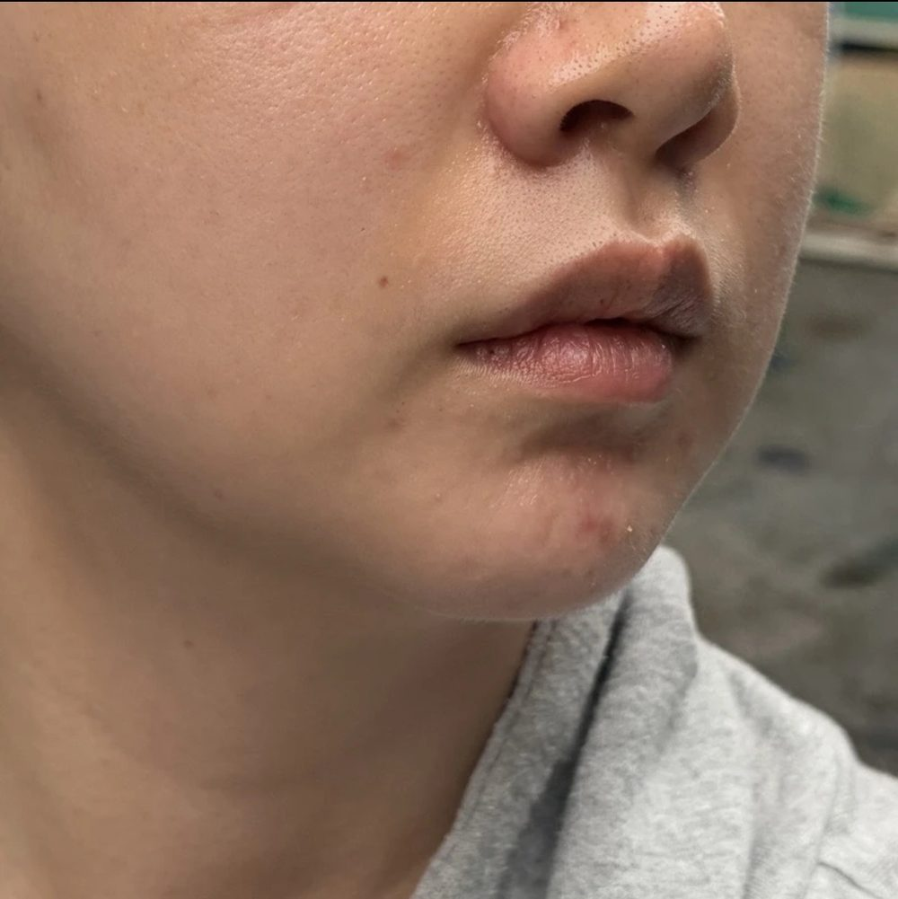
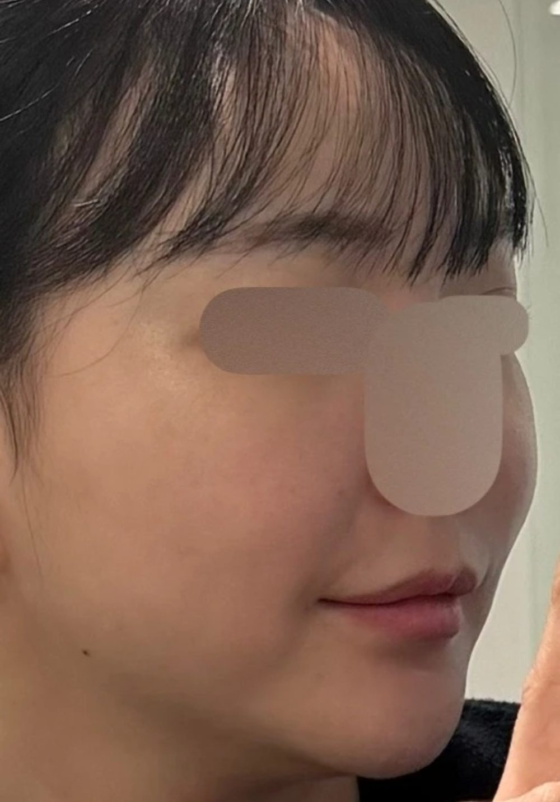

Are you considering radiofrequency lifting as your skin loses firmness and fine lines increase?
Alongside Thermage FLX, a range of radiofrequency lifting devices such as the 2nd-generation Density Noir and SERF have appeared, and many people are unsure which treatment to choose. They are all radiofrequency lifting, so what actually differs?

Dr. Choi Hyunho
Kind, meticulous, dedicated
He personally consults on and performs laser and aesthetic treatments. With kind and meticulous care, he looks after each patient with dedication.
- Regular member, Korean Society for Laser, Dermatology and Trichology
- Regular member, Korean Society for Aesthetic Plastic and Laser Medicine
- Regular member, Korean Society for Obesity and Aesthetics
- Associate member, Korean Filler Society
Reyeonk Clinic operates a one-to-one dedicated doctor system. Your doctor takes responsibility from consultation through treatment to finishing.
With more than 17 years of lifting experience since opening in 2009, you can experience your own small but decisive difference.
How do Density Noir, Thermage FLX and SERF differ?
All three treatments use radiofrequency lifting to deliver thermal stimulation to skin tissue and induce collagen remodeling.
| Density Noir | Thermage FLX | SERF | |
|---|---|---|---|
| RF type | Monopolar + bipolar combination | Monopolar | Dual-frequency monopolar |
| Frequency | Two radiofrequencies, monopolar and bipolar | 6.78MHz | 6.78MHz + 2MHz |
| Features | An upgrade of the original Density; Gentle mode and Infinite mode | FDA-approved original RF lifting, proven for safety and effect for over 20 years | Uses two frequencies together |
| Shared principle | Radiofrequency energy delivers thermal stimulation to skin tissue and induces collagen remodeling | ||
Because the way energy is delivered differs, it is best to choose according to your skin thickness, degree of laxity and treatment goal.
Which is more effective: Density Noir, Thermage or SERF?
There is no single device that is the most effective for every patient.
Suitable energy settings and treatment areas can differ depending on skin thickness, amount of facial fat, fine lines and degree of sagging. Besides the type of device, the doctor's skin assessment and treatment design are also important.
Are 600 shots the same across Density Noir, Thermage and SERF?
Even with the same 600 shots, the tip area, energy delivery method and output settings differ by device, so it does not mean the same effect.
How much energy is delivered to which area, such as the jawline, cheeks or around the nasolabial folds, also matters.
Which radiofrequency lifting hurts the least?
Cooling systems and energy delivery methods differ from device to device.
However, pain varies with individual sensitivity, treatment area and energy level. If pain is a concern, ask at your consultation about the anesthesia method and whether the energy can be adjusted.
How long do radiofrequency lifting results last?
Some people feel a change in firmness right after treatment, but changes from collagen remodeling can appear over several weeks to several months.
How long results last and when to repeat treatment depend on your skin condition, lifestyle and the progress of aging.
Can I have radiofrequency lifting if my face is thin?
Radiofrequency lifting does not affect fat, so concerns about side effects such as hollow cheeks are low.
However, if you have little facial fat or hollow cheeks, an even more careful treatment design is needed.
It is important to check skin thickness and fat distribution before treatment and adjust the energy level and treatment range for each area.
Can I have Ulthera and radiofrequency lifting together?
Ulthera uses focused ultrasound, while Thermage, Density Noir and SERF use radiofrequency energy.
Depending on your skin, combining treatments that use different kinds of energy can be considered. However, not every patient needs a combination treatment.
What to check before the device
- Skin thickness and degree of laxity
- Amount of facial fat and any hollow cheeks
- Shot distribution and energy settings by area
- Direct consultation and treatment design by your doctor
- Pain management and use of genuine tips
Density patient reviews
These are reviews from patients who had Density treatment at Reyeonk Clinic (translated from Korean). Results and satisfaction vary from person to person.


Why does Density hurt so much TT But the effect is good. I felt it after about 2 weeks.
Personally it felt a bit similar to Ulthera? Ulthera was a bit better for firming, but if you want fine lines and overall improvement together, Density Alpha seems good!
Review after Density Alpha treatment


As time passed, the nasolabial folds faded and my face line felt more defined? I was really surprised. It was the most satisfying of all the lifting lasers I have had.
My skin also feels better after treatment, and I plan to have it again in 6 months.
Review after Density Alpha treatment
Reviews are individual experiences, and results and satisfaction vary from person to person.
Appointments and multilingual support
We operate by appointment, so you can have your consultation and treatment without waiting.
Our Chinese-, Japanese- and English-speaking consultation staff and coordinators are available, so you can consult comfortably.
Reyeonk Clinic is a medical institution registered for the attraction of foreign patients (Registration No. M-2022-01-08-6785).
Frequently asked questions
-
How do Density Noir, Thermage and SERF differ?
All three use radiofrequency energy to deliver thermal stimulation to skin tissue and induce collagen remodeling. Thermage FLX is 6.78MHz monopolar, Density Noir Alpha combines monopolar and bipolar, and SERF is a dual-frequency monopolar system using 6.78MHz and 2MHz, so the way energy is delivered differs.
-
Which is more effective: Density Noir, Thermage or SERF?
There is no single device that is the most effective for every patient. Suitable energy settings and treatment areas vary with skin thickness, facial fat, fine lines and degree of sagging, so the doctor's skin assessment and treatment design matter as much as the device.
-
Are 600 shots the same across Density Noir, Thermage and SERF?
Even with the same 600 shots, tip area, energy delivery method and output settings differ by device, so the effect is not identical. How much energy goes to which area, such as the jawline, cheeks or around the nasolabial folds, is also important.
-
Which radiofrequency lifting hurts the least?
Cooling systems and energy delivery differ by device, but pain varies with individual sensitivity, treatment area and energy level. If pain is a concern, ask at your consultation about the anesthesia method and whether the energy can be adjusted.
-
How long do radiofrequency lifting results last?
Some people feel a change in firmness right after treatment, but changes from collagen remodeling can appear over several weeks to several months. How long results last and when to repeat treatment depend on skin condition, lifestyle and the progress of aging.
-
Can I have radiofrequency lifting if my face is thin?
Radiofrequency lifting does not affect fat, so concerns about side effects such as hollow cheeks are low. However, if you have little facial fat or hollow cheeks, an even more careful treatment design is needed, with skin thickness and fat distribution checked beforehand and the energy level and range adjusted by area.
-
Can I have Ulthera and radiofrequency lifting together?
Ulthera uses focused ultrasound, while Thermage, Density Noir and SERF use radiofrequency energy. Combining treatments with different kinds of energy can be considered depending on your skin, but not every patient needs a combination treatment.
-
What are the differences between Density Noir, Thermage and SERF?
All three induce collagen remodeling with radiofrequency, but the way energy is delivered differs. Thermage FLX is 6.78MHz monopolar, Density Noir Alpha combines monopolar and bipolar, and SERF is dual-frequency monopolar at 6.78MHz and 2MHz.
-
Which is more effective, Density Noir or Thermage?
It is hard to say that one is more effective for everyone. The suitable device and settings depend on skin thickness, degree of sagging and fine lines, so the doctor's assessment comes first.
-
Which is better, Thermage or SERF?
The two devices differ in frequency makeup and energy delivery. It is best to choose after a consultation that considers your goal, skin condition and pain sensitivity.
-
What is the difference between Density Noir and SERF lifting?
Density Noir Alpha combines monopolar and bipolar, while SERF is dual-frequency monopolar at 6.78MHz and 2MHz. Because energy is delivered differently, the treatment design can differ too.
-
Which radiofrequency lifting is good for improving skin firmness?
Thermage, Density Noir and SERF can all be considered for improving firmness. The suitable device and shot distribution depend on skin thickness and the degree of lost firmness.
-
Can I have Density Noir or SERF instead of Thermage?
Because the energy delivery differs by device, they are hard to treat as simple substitutes. It is best to choose a suitable device after checking your current skin condition and treatment goal.
-
How does the price of 600 shots differ among Density Noir, Thermage and SERF?
Price depends on the device, tip type, number of shots and any current promotion. The exact cost is given at your consultation together with a treatment plan suited to your skin.
-
Which radiofrequency lifting offers good value?
Rather than judging by price alone, what matters is whether the energy and shot distribution match what your skin needs. It is better to plan through a consultation than to choose more shots or treatments than necessary.
-
Why is Thermage more expensive than Density Noir?
Thermage FLX is the original radiofrequency lifting device, proven for safety and effect for over 20 years, and costs such as genuine tips are reflected in the treatment price. Actual cost varies by clinic and treatment configuration.
-
Which of Density Noir, Thermage and SERF hurts the least?
Pain depends on individual sensitivity, treatment area and energy level as well as the device, so it is hard to name one. Ask at your consultation about the anesthesia method and whether the energy can be adjusted.
-
Is there a radiofrequency lifting I can have without sleep anesthesia?
Radiofrequency lifting is often done with local anesthesia such as numbing cream and energy adjustment. Whether sleep anesthesia is needed and which method to use is decided at your consultation according to pain sensitivity.
-
How long do Density Noir, Thermage and SERF results last?
Changes from collagen remodeling appear over several weeks to several months, and how long they last varies by skin condition, lifestyle and the progress of aging.
-
When do radiofrequency lifting results appear?
Some people feel a change in firmness right after treatment, but changes from collagen remodeling can appear over several weeks to several months. Results vary by individual.
-
How many times a year should I have radiofrequency lifting?
There is no fixed number. The suitable interval depends on skin condition, lifestyle and the progress of aging, and is best decided with your doctor.
-
Which radiofrequency lifting suits a thin face?
Treatment design matters more than any particular device. Check skin thickness and fat distribution beforehand and adjust the energy level and treatment range by area.
-
What lifting should people with thin skin have?
The thinner the skin, the more carefully energy settings and treatment range must be adjusted. It is best to check skin thickness directly before deciding whether and how to treat.
-
Which radiofrequency lifting has fewer concerns about hollow cheeks?
Radiofrequency lifting does not affect fat, so concerns about side effects such as hollow cheeks are low. If you have little facial fat or hollow cheeks, shot distribution and energy settings should be adjusted by area after checking fat distribution at your consultation.
-
Which is best for nasolabial folds: Density Noir, Thermage or SERF?
Nasolabial folds have various causes, such as sagging, fat distribution and skin thickness, so no single device settles it. The energy and shot distribution needed around the folds should be designed after assessment.
-
Which radiofrequency lifting is good for improving pores and fine lines?
Pores and fine lines are approached differently depending on skin condition, and radiofrequency lifting is used for firmness and texture through collagen remodeling. The device and settings suited to your goal are decided after consultation.
A clinic that knows you well, Reyeonk.
At Reyeonk Clinic, your doctor checks your skin directly and proposes a lifting plan for your individual concerns. Rather than choosing as many shots or treatments as possible, what matters is finding out what your face actually needs.
* Results and duration vary from person to person, and side effects such as redness, swelling, pain, burns and fat atrophy can occur.
- Reyeonk Clinic
- 64 Eonju-ro 172-gil, Gangnam-gu, Seoul (Reyeonk Building)
B1, 3F and 4F - Phone
- +82-2-558-5581
- KakaoTalk
- One-to-one chat
- Website
- reyeonk.co.kr (Korean)
- Hours
- Mon, Tue, Thu 10:00–20:00
Fri 10:00–19:00
Sat 10:00–15:00
Closed Wed, Sun and public holidays - Directions
- See how to get here
* This article is provided for general information. Treatment results vary from person to person. Please decide on diagnosis and treatment through a consultation with a medical professional.